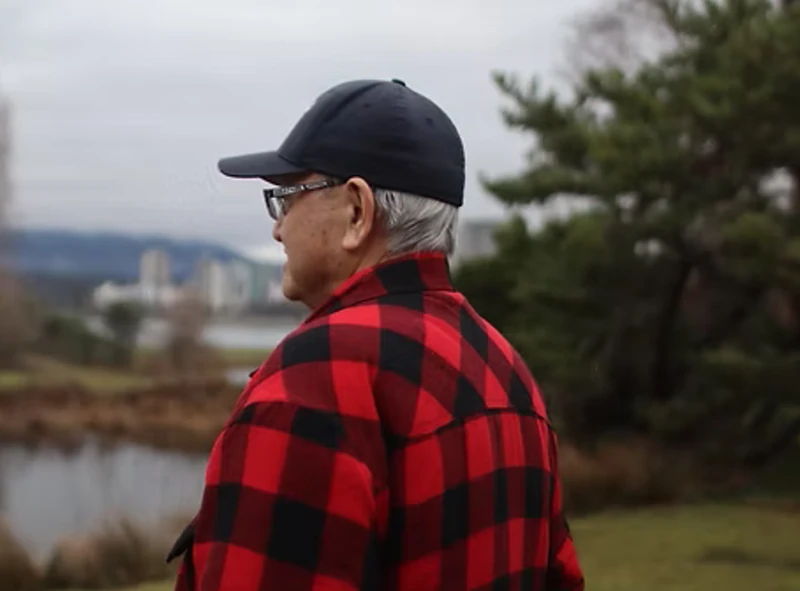

Case Study · April 2025
When the Rain Speaks
A short documentary exploring Jason Nahanee’s memories and emotional relationship with rain as a member of the Squamish community.

01 · Pre-production
Structuring an intimate conversation
My responsibilities included storyboarding, shot design, interview planning, and defining a visual approach that could support the subject's memories without overwhelming them.
02 · Production
Cinematography and scene coordination
I contributed to scene setting, camera planning, and on-set coordination to maintain visual continuity and an attentive documentary tone.
03 · Post-production
Editing, montage, and graphics
The final narrative was shaped through editing and montage, with visual effects and motion graphics integrated where they supported context and emotional pacing.
Next ProjectWired Wings
↗